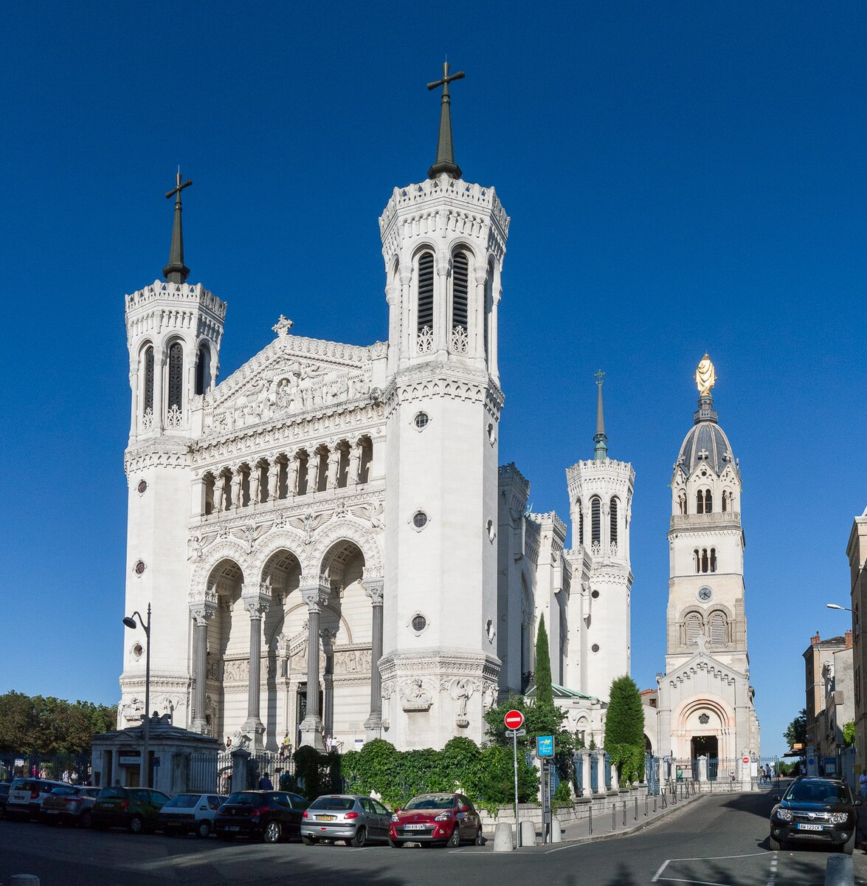
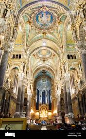
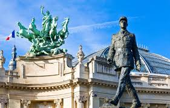
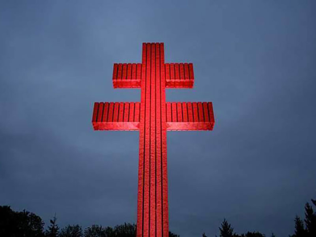
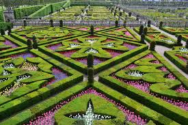
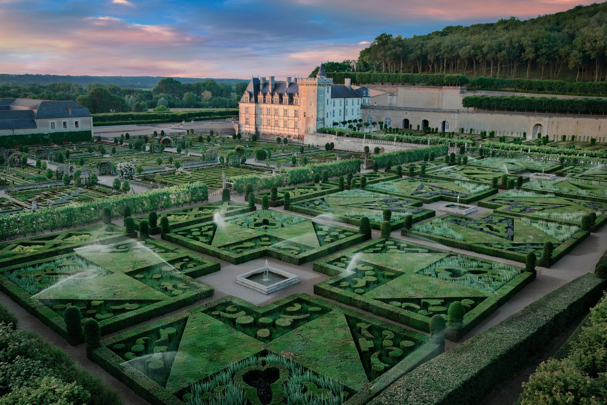

The Eiffel Tower, Paris
The Eiffel Tower is one of the most iconic landmarks in the world, rising proudly above Paris since 1889.
Originally built as a temporary structure for the World’s Fair, it became a symbol of French innovation and elegance.
Visitors can explore its three levels, enjoy breathtaking views of Paris, and even dine in its restaurants high above the city.
At night, the tower sparkles with thousands of lights, creating one of the most magical sights in Europe.
A must-see for anyone visiting France — the Eiffel Tower is more than a monument; it’s a timeless experience.
Best time to visit:
Early morning to avoid crowds, or evening for sunset and sparkling lights.
Opening hours:
Daily, 9:30–23:45 (varies seasonally); last entry slightly earlier.
Entry:
Ticket required for lifts or summit access (€10–€30 depending on level and age). Ground level is free.
SEE MAP
Fourvière Basilique, Lyon


Perched on the hill overlooking Lyon, the Basilique Notre-Dame de Fourvière is one of the city’s most breathtaking landmarks.
Built in the late 19th century, the basilica combines Romanesque and Byzantine styles, creating a truly unique and majestic appearance.
Visitors can climb or take the funicular to the top, where they’ll be rewarded with stunning panoramic views of Lyon’s old town, rivers, and rooftops.
Inside, the basilica is filled with golden mosaics, intricate details, and a peaceful atmosphere perfect for reflection.
Fourvière is a symbol of Lyon’s identity.
Best time to visit:
Spring and early autumn, when weather is pleasant and sightseeing is comfortable.
Opening hours:
Daily, approx. 8:00–19:00; tower access may have separate hours.
Entry:
Basilica interiors are free; tower or guided tours may require a small fee.
SEE MAP
Memorial Charles de Gaulle


Located in Colombey-les-Deux-Églises, the Mémorial Charles de Gaulle is a tribute to one of France’s most influential leaders.
The memorial honors General Charles de Gaulle — leader of the Free French Forces during World War II and founder of the Fifth Republic.
The site features a modern museum with interactive exhibits, historic documents, photos, and videos that tell the story of de Gaulle’s
life, vision, and impact on France.
Outside stands the iconic Cross of Lorraine, a massive monument symbolizing French resistance and unity.
Visitors come here not only to learn about history, but to understand the legacy of a man whose leadership shaped modern France.
Best time to visit:
Spring or early autumn for mild weather and fewer crowds.
Opening hours:
Daily, usually 9:00–18:00 (check local schedule).
Entry:
Free entry; guided tours may have a small fee.
SEE MAP
Arc de Triomphe
The Arc de Triomphe is one of Paris’s most iconic monuments, standing proudly at the top of the Champs-Élysées.
Commissioned by Napoleon in 1806, it was built to honor the soldiers who fought for France, especially during the Napoleonic Wars.
The monument is decorated with detailed sculptures, engraved battle names, and the Tomb of the Unknown Soldier — a powerful symbol of
national remembrance.
Visitors can climb to the top for one of the best panoramic views of Paris, with the city’s twelve avenues stretching out like a star
from the monument’s base.
A visit to the Arc de Triomphe is a journey through French history and one of the most breathtaking viewpoints in the capital.
Best time to visit:
Early morning or late afternoon to avoid crowds and enjoy soft lighting for photos.
Opening hours:
Daily, 10:00–23:00. Last entry 45 minutes before closing.
Entry:
Ticket required for access to the rooftop (~€13 for adults; under 18 free). Viewing the monument from the ground is free.
SEE MAP
Château de Villandry Gardens


If you’re into places that feel like they’ve jumped straight out of a fairytale, Villandry’s gardens are literally that. This château
is famous not just for its Renaissance architecture, but for its mind-blowing gardens — perfectly shaped hedges, geometric flower
patterns, and terraces that look like they were crafted with insane precision centuries ago.
The coolest part? Each garden has its own theme — the Ornamental Garden with its symbolically arranged shapes, the Water Garden that
feels super calm and reflective, and the Vegetable Garden, which somehow manages to make cabbages look aesthetic.
Best time to visit:
Spring and summer, when the gardens are in full bloom and colors are at their peak. Early morning is ideal to avoid crowds.
Opening hours:
Daily, 9:00–19:00 (April–September); 9:00–17:00 (October–March).
Entry:
Tickets required (~€12 for adults; children often free). Entry includes both the château and the gardens.
SEE MAP
Louvre Museum
The Louvre isn’t just a museum — it’s basically the world’s biggest flex when it comes to art and history. Once a royal palace, it now
holds over 35,000 pieces, from ancient Egyptian mummies to Renaissance masterpieces. It’s the home of icons like the Mona Lisa and the
Venus de Milo, but honestly, the whole place feels like a treasure hunt where every hallway hides something wild.
What makes the Louvre extra special is its vibe: that massive glass pyramid out front mixes old-school France with modern style and
inside you can jump from Greek statues to French crown jewels to Islamic art in just a few steps.
Best time to visit:
Early morning on weekdays or late afternoon to avoid the largest crowds. Spring and autumn offer pleasant weather outside as well.
Opening hours:
Tuesday–Sunday, 9:00–18:00; Wednesdays and Fridays, open until 21:45. Closed on Tuesdays.
Entry:
Tickets required (~€17 online). Some exhibitions may have additional fees. Free for visitors under 18 and EU residents under 26.
SEE MAP